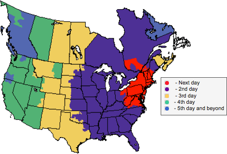

- Home /
- Shipping Info
Shipping Info
How long will my order take to arrive?
How can I track my shipped order?
Can GS Customs deliver AND install my products?
What should I do if my product arrives damaged?
What does curbside freight?
What is inside delivery?
How does my order come packaged?
How difficult will it be to install my own equipment?
How much does shipping usually cost?
Where is my order shipping from?
Can I pick my order, myself?
Can I arrange my own shipping?
Is my equipment shipment insured?
How does my product ship?
GS Customs uses variety of LTL (Less Than Truckload), motor freight companies, and van line carriers. Our consistent volume of daily shipments allows us to secure the most competitive rates and pass the savings on to our customers. Our most commonly used carriers are FedEx Freight, YRC Freight, R&L Carriers, TNT Freight, Daylight Transport, and ConWay Freight.
Back to top
How long will my order take to arrive?
Depending upon the lead time of your order; minimum 2-weeks and up to 10-weeks for a full gym package, your order will be packaged in less than 2 days after completion of all order items, and scheduled for pickup to be shipped.
Average Transit Times
Northeast: Up to 1-3 Business Days
Southeast: & Midwest Up to 3-5 Business Days
Mountain: Up to 4-7 Business Days
West: Up to 5-9 Business Days

Back to top
How can I track my shipped order?
Once your order has been picked-up by the shipping carrier, we will provide you with a PRO number (tracking number) and carrier website, where you can find an up to date estimated delivery status and date.
Back to top
Can GS Customs deliver AND install my products?
For those lucky enough to be located in the New York, New Jersey, and Connecticut metropolitan area, GS Customs can professionally deliver and install your products into any location. We will test and calibrate each unit to ensure the best product experience every time.
If you are located outside of the Northeast region, GS Customs has established a network of trusted professional delivery and installation companies that can meet your needs.
If you are purchasing a full gym package, GS Customs can have one of its experienced fitness experts fly to your location, who will design, coordinate, and execute your gym plan efficiently.
Back to top
What should I do if my product arrives damaged?
ALL ORDERS SHOULD ALWAYS BE INSPECTED PRIOR TO ACCEPTANCE!
In event that your order has been damaged in transit, make note on the BOL (Bill of Lading) that the driver has with him/her.
If the damage is MINOR (e.g. cracked or dented covers, scratched paint, missing end caps, broken console, etc.) please make note on the BOL (Bill of Lading) and ACCEPT shipment. Once signed for, please contact your GS Customs representative so that we can replace or repair any parts issues and be reimbursed by the shipping carrier as per your BOL notes.
If the damage is MAJOR (e.g. cracked frame, bent steel, fork lift punctures, or other extreme cases that would render a product unusable), you have the right to refuse delivery. Make sure to note all the outstanding issues on the carriers BOL (Bill of Lading), and call us immediately at customfitnessequipment.com, so that a customer service representative can guide you through the process of receiving a replacement unit / store credit.
Back to top
What does curbside freight mean?
Curbside freight is the standard delivery service via freight carriers, that leaves your product on the first dry landing of your home or business (e.g. driveway/front door step, or commercial store front). The trucking company will call you in advance to schedule a time of delivery. Typically, it will be scheduled during business hours Monday-Friday and they will provide you with a 2-5 hour window for delivery.
PLEASE INSPECT YOUR DELIVERED ORDER FOR DAMAGES PRIOR TO ACCEPTANCE!
If your equipment is damaged, please read the procedure above.
Back to top
What is inside delivery mean?
Inside delivery is a service provided by GS Customs or specialty delivery companies that will bring in your fitness equipment order up to 50 feet inside your home or business. If required, the service will also include disassembly of equipment to move through your location and reassembly of the product in the selected final location.
PLEASE INSPECT YOUR DELIVERED ORDER FOR DAMAGES PRIOR TO ACCEPTANCE!
If your equipment is damaged, please read the procedure above.
Back to top
How does my order come packaged?
More than 75% of all GS Customs orders are packaged on pallets, covered in foam, cardboard, or bubble wrapped, and then shrink wrapped for protection of electronics and fragile parts. In most cases, products ship fully assembled, on occasion, GS Customs will remove the console or other detachable pieces that can be potentially damaged during transit.
For larger orders or full trailer loads, GS Customs will blanket wrap your shipment and thoroughly secure all products to the shipping trailer floor.
Please note: Most new equipment orders come factory packaged, and require simple assembly. If you would like to have professional assembly, please contact us toll-free customfitnessequipment.com and a GS Customs representative will address your needs.
If you require specialty packaging please call customer service toll-free at customfitnessequipment.com.
Back to top
How difficult will it be to install my own equipment?
Many customers choose to install their own equipment for additional savings on shipping.
Difficulty Easy: 1-2 People
Moderate: 2-3 People
Hard: 3-4 People, disassembly required
Very Hard: 3-4 People, disassembly required
Treadmills (~250-450 lb.): Hard
Ellipticals (~200-350 lb.): Moderate
Steppers (~130-175 lb.): Easy
Exercise Bikes (~125-195 lb.): Easy
Spin Bikes (~100-145 lb.): Easy
Rowers (~50-130 lb.): Easy
Strength Equipment (~75-1000 lb.): Very Hard
Specialty Equipment (~50-450 lb.): Moderate
Stepmill, Jacob's Ladder, Endless Rope, Absolo, etc.
Back to top
How much does shipping usually cost?
Based on our consistent volume of daily shipments we are able to secure the most competitive rates and pass the savings on to our customers. Residential orders with lift-gate service traditionally ship from a minimum of $145 to roughly $395 depending on the dimensions, weight and final destination of the unit. Commercial orders with loading dock will ship for less than residential. Larger orders, full trailers, and ocean freight will yield a much lower unit price based on volume at roughly $100 to $175 per unit. Expedited air freight services are available at a slightly higher price point if desired.
Back to top
Where is my order shipping from?
Most orders will be shipped from one of our two New York warehouse locations. Some new equipment orders will be shipped directly from the manufacturer to your door. A GS Customs representative, at your request, will notify you of the shipment from our location and estimated delivery date.
Back to top
Can I pick my order up, myself?
Sure! As soon as your order is completed, your GS Customs representative will contact you to schedule a convenient pick-up time and date.
Please notify the representative when placing the order, if you will be picking the order up. All pick-up will be from our production facility located at:
Maspeth,
NY 11378
Can I arrange my own shipping?
Sure! Although GS Customs secures some of the most competitive shipping rates, we understand that our customers sometimes have relationships with carriers. In this instance, GS Customs can provide you with the package dimensions required to get your own quote. If your quote is lower than our quote, we have no issues using your carrier; however, if any damage during transit occurs after leaving the GS Customs warehouse, you, the customer, would be responsible to contact the carrier and file any and all damage claims.
Back to top
Is my equipment shipment insured?
All equipment delivered by GS Customs, or trusted freight carriers are insured for the full sale value not including shipping costs. If shipped through GS Customs's network of trusted carriers, GS Customs will supersede the damage claim and make any and all repairs at the location of the customer.
Back to top